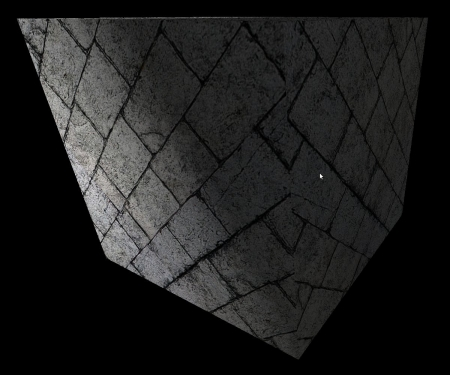
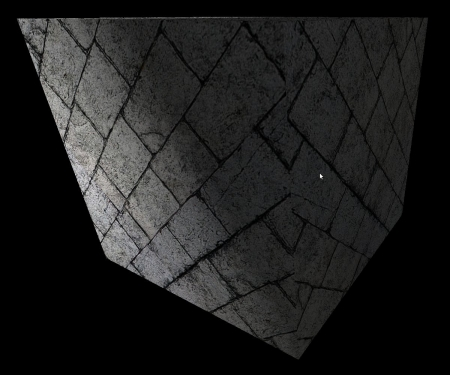

Урок 26 - Карта нормалей
В основе вычисления векторов тангента / битангента в этом уроке лежит Lengyel, Eric. "Computing Tangent Space Basis Vectors for an Arbitrary Mesh". Terathon Software 3D Graphics Library, 2001. http://www.terathon.com/code/tangent.html
Результат нашего освещения не так уж и плох. Он прекрасно интерполируется по модели и усиливает чувство реализма сцены. Хотя это можно многократно улучшить. Фактически такая интерполяция только помеха, особенно когда текстура пытается изобразить неровности поверхности, это выглядит очень плоско. Для примера взглянем на следующее изображение:
 

Левое изображение выглядит намного лучше правого. Оно создает ощущение неровности каменистой поверхности, в то время как правое выглядит слишком гладким для текстуры кирпича. Левое изображение рендерилось с использованием метода Карты Нормалей (Normal Mapping) (или Bump Mapping), и это будет темой данного урока.
Идея карты нормалей в том, что вместо того, что бы интерполировать нормали вершин по поверхности треугольника (это и создает гладкость, которую мы хотим избежать), они могут быть взяты из текстуры. Это гораздо лучше отразит реальный мир, поскольку большинство поверхностей (особенно те, которые часто используются в играх) не настолько гладкие, что бы свет отражался как при интерполяции нормалей. Как раз наоборот, неровности поверхности будут отражать свет в различных направлениях, согласно основному направлению поверхности в точке, куда падает свет. Для каждой текстуры эти нормали могут быть вычислены и записанны в указанную текстуру, называемую картой нормалей (normal map). Во время вычисления света в фрагментном шейдере указанная нормаль берется из текстуры и используется как обычно. Следующее изображение демонстрирует разницу между обычным освещением и с использованием карты нормалей:

Сейчас мы имеет нашу карту нормалей и истинные (или по крайней мере довольно близкие) нормали поверхности, записанные в ней. Можем ли мы взять и начать ее использовать? нет. Задумаемся на секунду о кубе выше с текстурой кирпича. Одна и также текстура используется для всех 6 граней и следовательно, будет использоваться одинаковая карта нормалей. Проблема в том, что каждая грань направленна в свою сторону, поэтому взаимодействие с падающим лучем должно быть различным. Если мы будем использовать вектор нормали из карты без каких-либо изменений, то мы получим неправильный результат, потому что одинаковый вектор нормали не может быть использован для 6 граней с различным направлением! Например, нормаль верхней грани в целом направленна в (0,1,0), даже при неровностях поверхности. А нормаль нижней грани равна вектору (0,-1,0). Смысл в том, что нормали определены в их собственном пространстве координат и должны быть переведены в мировое пространство, тогда они смогут принять участие в вычислении света. Ощущение, что мы уже где-то с этим сталкивались (вершинные нормали). Они были определены в локальном пространстве, и мы преобразовывали их в мировое пространство через мировую матрицу.
Давайте определим систему координат, в которой будут заданы вектора нормалей. Эта координатная система потребует 3 ортогональные оси единичной длины. Так как нормаль - часть 2D текстуры, и 2D текстура имеет 2 ортогональные оси U и V (обе единичной длины) основная задача отобразить координату X на ось U, а Y на V. Вспомним, что U идет слева направо, а V снизу вверх (начало координат этой системы в нижнем левом углу текстуры). Координата Z будет выходить из текстуры вверх и будет перпендикулярна и X и Y:

Вектора нормалей теперь могут быть указанны по отношению к координатной системе и записаны в RGB текселях текстуры. Заметим, что даже на неровной поверхности нам все равно требуется общее направление нормалей из текстуры, т.е. координата Z будет доминировать, в то время как X и Y будут только немного (или много) наклонять вектор из стороны в сторону. Хранение координат XYZ вектора в текселе RGB будет делать карту нормалей голубоватого оттенка как на следующем изображении:

Вот 5 первых текселей верхней строки карты нормалей (идем слева в право): (136,102,248), (144,122,255), (141,145,253), (102, 168, 244) и (34,130,216). Преобладание Z не может не быть замеченным.
Следующее что мы делаем, это проход через все треугольники нашей модели и размещение карты нормалей так, что бы координаты текстуры каждой вершины получили их позицию на карте. Например, пусть координаты текстуры полученной треугольником (0.5,0), (1, 0.5) и (0,1). Карта нормалей расположится следующим образом:

На изображении выше координатная система в нижнем левом углу представляет локальное пространство объекта.
Кроме координат текстуры 3 вершины так же имеют 3D координаты, которые представляют их позицию в локальном пространстве. Когда мы помещаем текстуру на поверхности треугольника, мы по существу даем значения для U и V векторов текстуры в локальном пространстве. Если мы будем вычислять U и V сейчас, то мы генерируем матрицу преобразований для перемещения нормалей с карты в локальное пространство. После они могут быть преобразованы в мировое пространство как обычно и принять участие в расчетах света. Обычно вектор U в локальном пространстве называют Тангент (Tangent) и вектор V Битангент (Bitangent). Матрица преобразования, которая нам понадобится для определения координатной системы, называется матрицей TBN (Tangent-Bitangent-Normal). Эти векторы Тангент-Битангент-Нормаль и определяют систему координат, которая известна как пространство (или текстура) Тангента. Поэтому нормали на карте записаны в тангент / текстурном пространстве. Теперь попробуем определить как вычислить U и V локальном пространстве.
Давайте взглянем на изображение выше абстрагировано. У нас есть треугольник с 3 вершинами в точках P0, P1 и P2 и координатами текстуры (U0,V0), (U1,V1) и (U2,V2):

Мы хотим найти вектора T (Тангент) и B (Битангент) в локальном пространстве. Мы можем увидеть, что 2 стороны треугольника E1 и E2 могут быть записаны в виде линейной комбинации T и B:

Это может быть записано как:

Теперь очень легко перейти в матричную форму:

Мы хотим избавиться от матрицы с правой стороны. Для того что бы сделать это мы можем домножить обе стороны равенства на матрицу, обратную к помеченной красным выше:

Тогда мы получим следующее:

После нахождения обратной матрицы:

Мы можем запустить этот процесс для каждого треугольника в меше и генерировать вектора тангент и битангент для всех (одни и те же вектора для 3 вершин треугольника). Обычно хранят тангент / битангент для вершин через нахождение их среднего значения для всех треугольников, содержащих эту вершину (так же мы поступали для нормалей вершин). Причина тому эффект сглаживание при проходе по поверхности треугольника для избежания жесткой границы на краях соседних треугольников. Третий элемент этой координатной системы - нормаль - это результат векторного произведения тангента и битангента. Эта троица - Tangent-Bitangent-Normal теперь может служить как базовая координатная система и быть использована для преобразования нормали из карты нормалей в локальное пространство объекта. Следующий шаг - это преобразовать ее в мировое пространство и использовать для вычисления света. Однако, мы можем немного оптимизировать: преобразовав Tangent-Bitangent-Normal в мировое пространство, а затем преобразовывать только нормали из карты нормалей. Это позволит получать нормали сразу в мировом пространстве.
Алгоритм данного урока:
- Предоставить вектор тангент в вершинный шейдер.
- Преобразовывать вектор тангент в мировое пространство и передавать его в фрагментный шейдер.
- Использовать вектор тангент и нормаль (оба в мировом пространстве) для вычисления битангента в фрагментном шейдере.
- Генерировать матрицу мирового преобразования через тангент-битангент-нормаль.
- Взять сэмпл из карты нормалей.
- Преобразовывать нормали в мировое пространство через матрицу выше.
- Продолжать вычисление света как обычно.
Есть одна особенность, которую мы должны отразить в нашем коде. На уровне пикселя тангент-битангент-нормаль не являются ортонормированным базисом (3 вектора единичной длины, которые взаимно-перпендикулярны друг другу). Если 2 причины этого: первая - мы усредняем значения для тангента и нормали у вершин треугольников, которые делят их, и вторая - тангент и нормаль интерполируются растеризатором, и на уровне пикселя мы видим лишь интерполируемый результат. Это заставляет тангент-битангент-нормаль потерять их ортогональное свойство. Но для преобразования из пространства тангента в мировое нам требуется ортонормированный базис. Решение в использовании процесса Грама ― Шмидта. Он принимает группу векторов и переводит их в ортонормированный базис. В двух словах процесс выглядит так: выбор вектора 'A' из группы и его нормирование. Затем выбор вектора 'B' и разделение его на 2 компонента (эти компоненты - вектора, чья сумма дает 'B'), где первый проекция на 'A', а второй перпендикуляр к нему. Теперь заменим 'B' на компонент, который перпендикулярен к 'A' и нормируем его. Процесс продолжается для всех векторов в группе.
В результате мы не используем математически корректные вектора тангент-битангент-нормали, но мы получим сглаживание, которое требуется для избежания разрывов на границах треугольников.
Прямиком к коду!
mesh.h:33
struct Vertex
{
Vector3f m_pos;
Vector2f m_tex;
Vector3f m_normal;
Vector3f m_tangent;
Vertex() {}
Vertex( const Vector3f& pos,
const Vector2f& tex,
const Vector3f& normal,
const Vector3f& Tangent )
{
m_pos = pos;
m_tex = tex;
m_normal = normal;
m_tangent = Tangent;
}
};
Это наша новая структура для вершины с дополнительным вектором тангентом. Мы будем вычислять битангент в фрагментном шейдере. Заметим, что нормаль тангентного пространства идентична нормали обычного треугольника (так как текстура и треугольник параллельны). Поэтому вершинная нормаль в обоих координатных системах одинакова.
for (unsigned int i = 0 ; i < Indices.size() ; i += 3) {
Vertex& v0 = Vertices[Indices[i]];
Vertex& v1 = Vertices[Indices[i+1]];
Vertex& v2 = Vertices[Indices[i+2]];
Vector3f Edge1 = v1.m_pos - v0.m_pos;
Vector3f Edge2 = v2.m_pos - v0.m_pos;
float DeltaU1 = v1.m_tex.x - v0.m_tex.x;
float DeltaV1 = v1.m_tex.y - v0.m_tex.y;
float DeltaU2 = v2.m_tex.x - v0.m_tex.x;
float DeltaV2 = v2.m_tex.y - v0.m_tex.y;
float f = 1.0f / (DeltaU1 * DeltaV2 - DeltaU2 * DeltaV1);
Vector3f Tangent, Bitangent;
Tangent.x = f * (DeltaV2 * Edge1.x - DeltaV1 * Edge2.x);
Tangent.y = f * (DeltaV2 * Edge1.y - DeltaV1 * Edge2.y);
Tangent.z = f * (DeltaV2 * Edge1.z - DeltaV1 * Edge2.z);
Bitangent.x = f * (-DeltaU2 * Edge1.x - DeltaU1 * Edge2.x);
Bitangent.y = f * (-DeltaU2 * Edge1.y - DeltaU1 * Edge2.y);
Bitangent.z = f * (-DeltaU2 * Edge1.z - DeltaU1 * Edge2.z);
v0.m_tangent += Tangent;
v1.m_tangent += Tangent;
v2.m_tangent += Tangent;
}
for (unsigned int i = 0 ; i < Vertices.size() ; i++) {
Vertices[i].m_tangent.Normalize();
}
Этот участок кода реализует алгоритм вычисления вектора тангента (описан в разделе теории). Проход идет по массиву индексов и вектора треугольников извлекаются из массива вершин по их индексу. Мы вычисляем 2 стороны через вычитание первой вершины из второй и третьей. Аналогично поступаем с координатами текстуры и вычисляем разность вдоль U и V осей на 2 сторонах. 'f' обозначает дробь, которая будет участвовать в вычислениях справа. После нахождения 'f' мы можем вычислить и тангент и битангент через умножение его на произведение 2 матриц. Заметим, что вычисления битангента находятся для полноты картины. На самом деле нам требуется только тангент, который мы передаем на 3 вершины. В конце нам требуется только пройтись по массиву вершин и нормировать тангент.
Теперь, когда вы все это поняли в теории и на практике, я могу вам сообщить, что мы не будем использовать этот код в уроке. Assimp имеет флаг пост-обработки, называемый 'aiProcess_CalcTangentSpace', который для нас вычисляет именно вектор тангент (в любом случае хорошо знать реализацию, возможно потребуется ее использовать в будущих проектах). Нам только требуется указать это во время загрузки модели, и затем мы можем получить доступ к массиву 'mTangents' в классе aiMesh и взять значения тангента отсюда. Смотрите код для деталей.
mesh.cpp:195
void Mesh::Render()
{
...
glEnableVertexAttribArray(3);
for (unsigned int i = 0 ; i < m_Entries.size() ; i++) {
...
glVertexAttribPointer(3, 3, GL_FLOAT, GL_FALSE, sizeof(Vertex), (const GLvoid*)32);
}
...
glDisableVertexAttribArray(3);
}
Так как структура вершин разрастается, нам требуется добавить несколько модификаций в функцию рендера класса Mesh. Четвертый атрибут вершины разрешен к использованию и мы указываем позицию тангента в 32 байте (стразу после нормали) от начала вершины. В конце 4-й атрибут отключается.
lighting_technique.cpp:28
layout (location = 0) in vec3 Position;
layout (location = 1) in vec2 TexCoord;
layout (location = 2) in vec3 Normal;
layout (location = 3) in vec3 Tangent;
uniform mat4 gWVP;
uniform mat4 gLightWVP;
uniform mat4 gWorld;
out vec4 LightSpacePos;
out vec2 TexCoord0;
out vec3 Normal0;
out vec3 WorldPos0;
out vec3 Tangent0;
void main()
{
gl_Position = gWVP * vec4(Position, 1.0);
LightSpacePos = gLightWVP * vec4(Position, 1.0);
TexCoord0 = TexCoord;
Normal0 = (gWorld * vec4(Normal, 0.0)).xyz;
Tangent0 = (gWorld * vec4(Tangent, 0.0)).xyz;
WorldPos0 = (gWorld * vec4(Position, 1.0)).xyz;
}
Это обновленный вершинный шейдер. Здесь не так много нового, большая часть изменений в фрагментном шейдере. Добавился тангент, который принимается, трансформируется в мировое пространство и идет на выход.
lighting_technique.cpp:185
vec3 CalcBumpedNormal()
{
vec3 Normal = normalize(Normal0);
vec3 Tangent = normalize(Tangent0);
Tangent = normalize(Tangent - dot(Tangent, Normal) * Normal);
vec3 Bitangent = cross(Tangent, Normal);
vec3 BumpMapNormal = texture(gNormalMap, TexCoord0).xyz;
BumpMapNormal = 2.0 * BumpMapNormal - vec3(1.0, 1.0, 1.0);
vec3 NewNormal;
mat3 TBN = mat3(Tangent, Bitangent, Normal);
NewNormal = TBN * BumpMapNormal;
NewNormal = normalize(NewNormal);
return NewNormal;
}
void main()
{
vec3 Normal = CalcBumpedNormal();
...
Код выше содержит большую часть изменений фрагментного шейдера. Вся обработка нормалей инкапсулирована в функцию CalcBumpedNormal(). Мы начинаем с нормирования векторов нормали и тангента. Третья строка - это процесс Грама-Шмидта. dot(Tangent, Normal) дает длину проекции тангента на вектор нормали. Произведение этой длины на саму нормаль - компонент тангента вдоль нормали. Вычтем ее из тангента и получим новый вектор, который перпендикулярен к нормали. Это наш новый тангент (не забудьте его нормировать!). Векторное произведение между тангентом и нормалью дает нам битангент. Затем мы берем сэмпл из карты нормалей и получаем нормаль для этого пикселя (в пространстве тангента). 'gNormalMap' - новая uniform-переменная типа sampler2D, для которой мы заранее должны привязать карту нормалей перед вызовом отрисовки. Нормаль записана как цвет, поэтому ее компоненты в отрезке [0-1]. Мы преобразуем ее обратно через функцию 'f(x) = 2 * x - 1'. Она отображает 0 в -1 и 1 в 1, это обратно тому, что происходило при записи нормали.
Теперь нам требуется преобразовать нормаль из пространства тангента в мировое. Мы создаем матрицу 3x3, названную TBN, используя один из конструкторов типа 'mat3'. Это конструктор принимает 3 вектора как параметры и генерирует матрицу помещая первый параметр в верхнюю строку, второй в среднюю и третий в нижнюю. Если вам не понятно почему именно этот порядок, а не какой-нибудь другой, просто запомните, что тангент отображается на ось X, битангент на Y, и нормаль на Z (смотрите на изображение выше). В единичной матрице 3x3 верхний ряд хранит ось X, средний ось Y, и нижний ось Z. Мы просто соблюдаем этот порядок. Нормаль из пространства тангента умножается на матрицу TBN, и результат нормируется перед отправлением. Это итоговая нормаль пикселя.
Этот урок поставляется со следующими JPEG файлами:
- 'bricks.jpg' - это текстура цвета.
- 'normal_map.jpg' - карта нормалей, которая была генерирована с 'bricks.jpg'.
- 'normal_up.jpg' - такая же карта нормалей, только все нормали направленны вверх. Когда используется эта карта, то теряется весь эффект. Проще привязать эту текстуру, когда мы не хотим использовать отображение нормалей, без использования 2 техник (хотя это и затратно). Вы можете использовать 'b' для переключения между отображением нормалей и рендером без него для того, что бы увидеть разницу.
Карта нормалей привязана к модулю текстур 2, который теперь будет стандартом для это цели (0 для цвета и 1 для карты теней).
Замечание о генерации карты нормалей:
Существует множество способов генерировать карту нормалей. Для этого урока я использовал gimp, свободное приложение, и его плагин для карты нормалей. После того, как вы установили плагин, вы просто загружаете текстуру, которую планируете использовать для модели, переходите в Filters->Map->Normalmap. У вас появится возможность изменить некоторые аспекты карты нормалей и настроить ее различными способами. Когда подберете подходящую нажмите 'OK'. Карта заменит оригинальную текстуру в главном окне gimp. Сохраните ее под другим именем и используйте в своих работах.